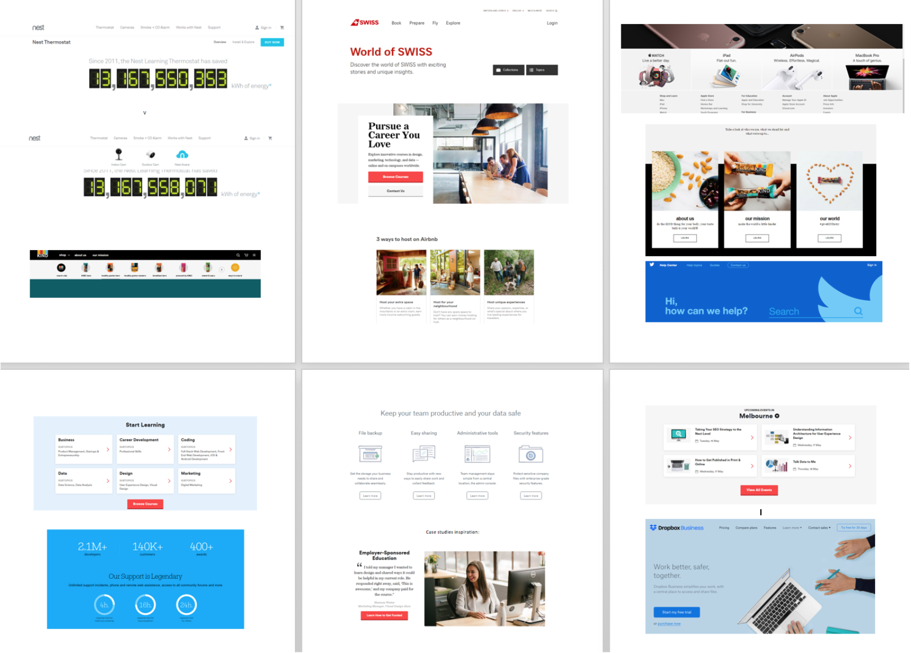
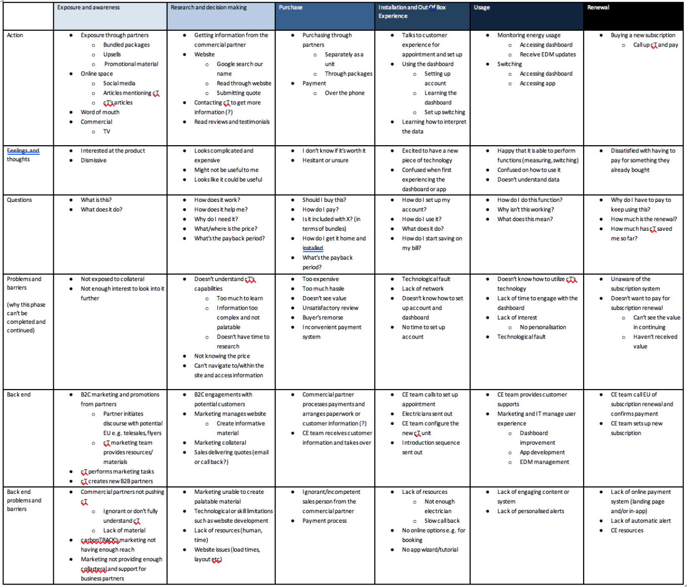

carbonTRACK is a technology company building intelligent energy management solutions for the residential and commercial markets.
It’s website was created 4 years ago, and since then there were only small changes in content. It was managed with very limited resources. The design patterns were outdated and did not take into consideration who the intended users were, and what their goals were. The website did not convey the impression of a cutting edge technology company, and did not serve to build trust at first-impression.
In this project, the website was rebuilt from scratch in order to better meet user and business goals.
The main goals of this redesign and review project were:
Design and competitor research
To understand how carbonTRACK’s website compared to other industry leaders, we conducted a competitor analysis and design research. We identified standard features, how competitors approached the design problems, especially explaining complex products and solutions, and looked for opportunities to differentiate the company.
Key features examined included navigation, layout and structure, product feature pages and explanations, information provision, information architecture, and ideal user flows to reach goals.
When comparing the flows into key conversion pages on different websites, we recognised that there were barriers in carbonTRACK’s website that discouraged traffic to flow to partner and purchase pages. We collated the elements that we liked best into a concept mood board.
Google analytics assessment
In order to get some quantitative data to inform assumptions, we looked at the website’s google analytics. We:
From this assessment we formed the following hypotheses:
User Testing - Interviews
We found several interview subjects who would show different perspectives on what they are looking for from the website. We needed to collect insights from both potential product users - homeowners with pv solar in particular, and from potential partner companies.
Six interviews were conducted, both in person and over the phone (with screen-share).Users were given five tasks to complete on the website and were asked to describe what they were thinking and feeling while attempting to complete the tasks. The interviews were conducted in a team of two, with one person scribing the users’ responses, and the other observing the users’ interactions with the site. Relevant tangents were encouraged and explored.
Some standout themes emerged from the interviews:
“How it works - I'm hoping that will give me some key details. I want to know the key specifics.”
“There really isn't anything that says 'how it works' - I’m looking for something bigger and bolder saying this is what the system does.”
“Blurbs are very overview not specific enough. I’m looking for numbers and details.”
“Installed by accredited electrician… sounding expensive.”
“Its energy management, and the aim is to save me money, but it might be quite expensive.”
Affinity Mapping
In order to make sense of all of the information we had collected, we held a session in which we categorised our insights in a few different ways. We created affinity maps to find patterns in pain points and barriers to job completion.
Service Blueprint
For clarity and to make sure we stayed on track throughout the process, we used a service blueprint to map out the full customer journey from first interacting with carbonTRACK online, to current customers visiting the website to find answers to questions they have about the product.
The blueprint includes what the customer does, things the business does that the customer cannot see, and all the things in the background that support those actions (support processes and systems).
User Analysis and Persona Development
After overall synthesis was complete, and to help determine the redesign goals, we developed key user personas. User personas were created for ideal industry partner targets, as well as product users (aka end customers). These personas were used throughout the design phase of the website redesign to guide decision-making in the following stages:
Defining Problem Statements
We developed “how might we” problem statements from our synthesised research to focus our design phase. These problem statement arose:
Design Studio
The team was given 10 minutes to sketch ideas to solve key problems identified before coming together to share their designs and decide on a direction. This process was repeated twice more with the direction becoming clearer each time.
This proved to be beneficial to the team because it allowed us to rapidly explore many directions early on without getting bogged down just yet by the potential implications; we were able to get out any initial ideas while avoiding the pressure to overthink.
Sitemapping, Wireframing & Prototyping
Our team created sitemap for information architecture and a digital wireframe to plan the websites new structure.
We presented the low-fi and mid-fi wireframes to the end users. For each user, we walked through the design catered to their data needs. We also presented the major alternative design direction. We asked the end users about the data points presented and their general impression. After each feedback session, we incorporated the changes.